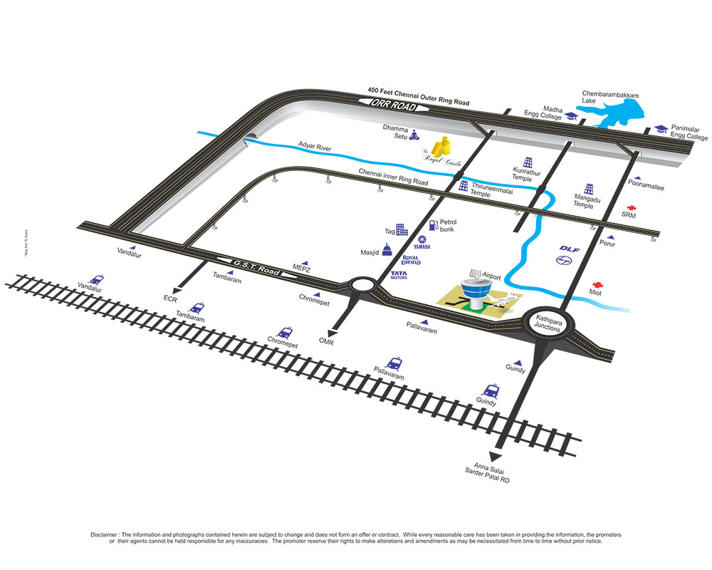

The Royal Castle – Live a Peaceful Life in Chennai near Inner Ring Road
Chennai's Inner Ring Road is the town's talk in terms of several real estate developments. At present, there are many residential infrastructures built with luxury apartments and flats near Inner Ring Road Chennai. Besides, those who wish to buy a home in heart of the city, but price matters, they lookout properties near IRR as an opportunity to buy their dream homes in Chennai. Especially for those looking to buy a flats or apartments this has become a good option in Chennai.
In this way, by understanding housing needs of the home seekers, Amarprakash have constructed an excellent residential township "The Royal Castle", which is very near to the Inner ring road of Chennai. The Royal Castle is a well-designed gated township that comprises of studio and duplex flats that suits the different choice of people according to needs and budget. It has a very close proximity to the Inner Ring Road, whereas the residents can enjoy a better connectivity to all the important places of the Chennai city. Furthermore, the residential township has many unique amenities for the inhabitants. Thus, residents can get a stress free living, as they could get all their essential needs within The Royal Castle Township.
For those looking to buy an affordable property in an upcoming location, The Royal Castle flats near Inner Ring Road Chennai is an ideal choice of investment. Moreover, the location near IRR has a major transportation access to the town and its adjacent localities are witnessing a high real estate development. In addition, the capital appreciations for residential properties are increasing year-by-year near the Inner Ring Road. Notably, the rental value is also to increase near IRR, as the locality offers a better connectivity to some of the major social infrastructures of the city. Therefore, buying a residential property in one of the excellent residential townships like "The Royal Castle" is a smart choice for buyers, as well as a good property investment in Chennai.